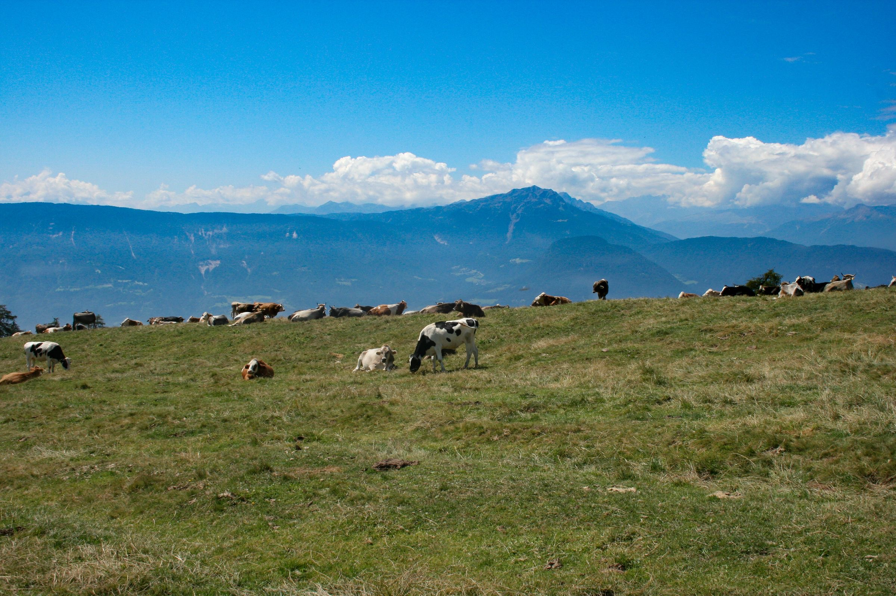
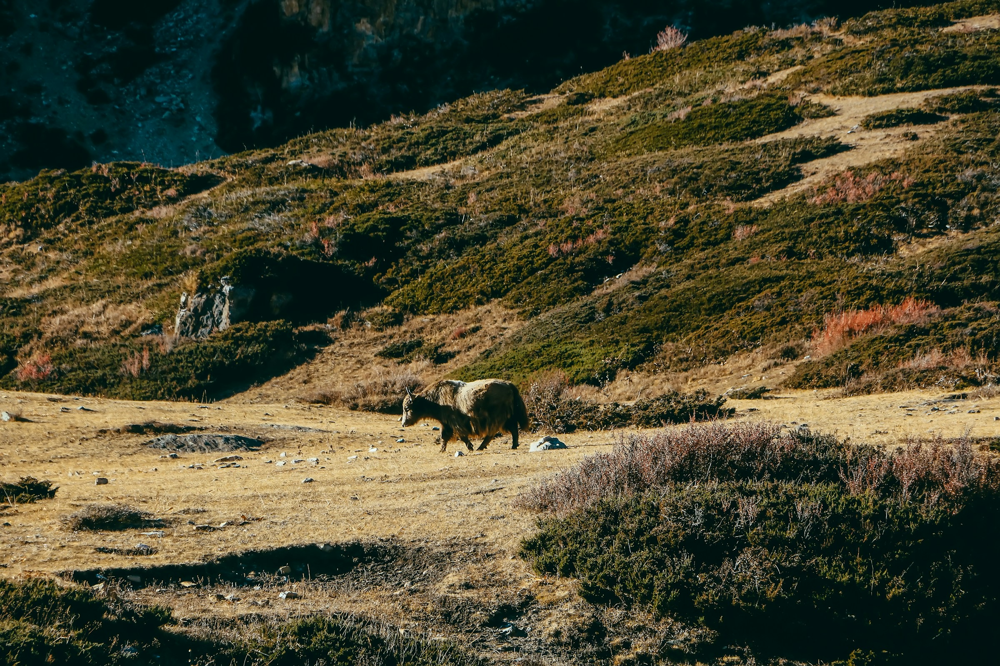

Two ways to walk the farm.
Same story and products — presented through two distinct visual approaches while we decide which one fits Manaram best. Pick whichever you'd like to look around in.


Same story and products — presented through two distinct visual approaches while we decide which one fits Manaram best. Pick whichever you'd like to look around in.

